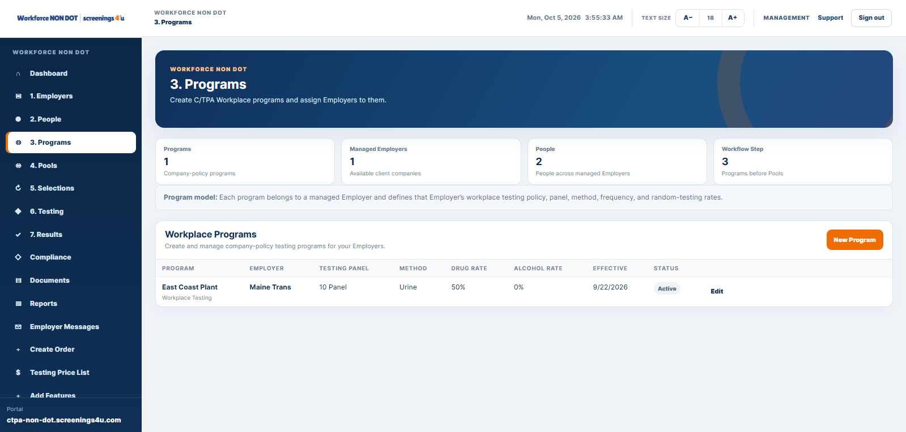

Employer Management
Manage sponsored employers, contacts and account settings.
Workforce gives C/TPAs one SaaS operating system for employer clients, employees, programs, random selections, testing orders, results, compliance, documents, reporting and client billing.

Manage sponsored employer clients without duplicating the operational stack for each company.
Manage sponsored employers, contacts and account settings.
Maintain employee records across managed employer clients.
Create and administer workforce programs across clients.
Run eligible selections and track history across programs.
Create and track non-DOT testing activity.
Review authorized results, open work and supporting records.
Manage employer invoicing with the operational context attached.
Professional and Enterprise expand customer delivery and branding controls.

Program administration stays tied to the employer and employee records behind each client.
Current C/TPA plans include billing tools and client invoicing, with deeper controls at higher tiers.

Move from portfolio-level status into the employer, employee and program record that needs attention.
Professional and Enterprise add broader employer delivery, while Enterprise adds branded email, white-label and SSO capabilities.

Choose the level of client management, reporting, delivery and branding your operation needs.